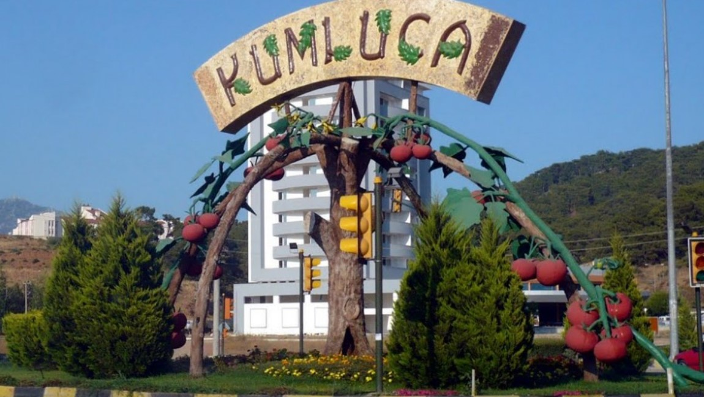
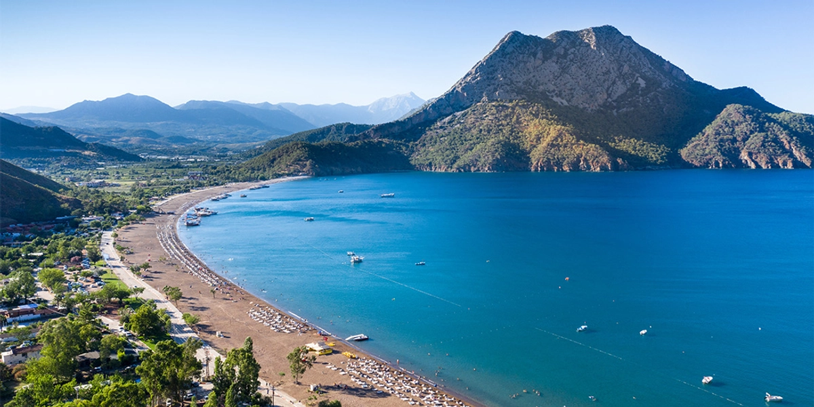
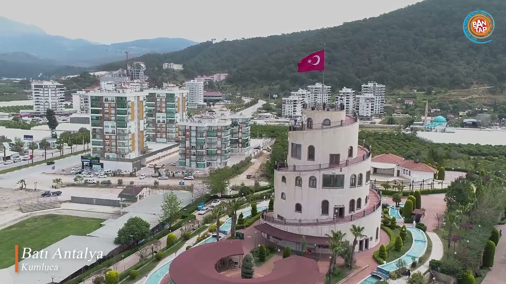
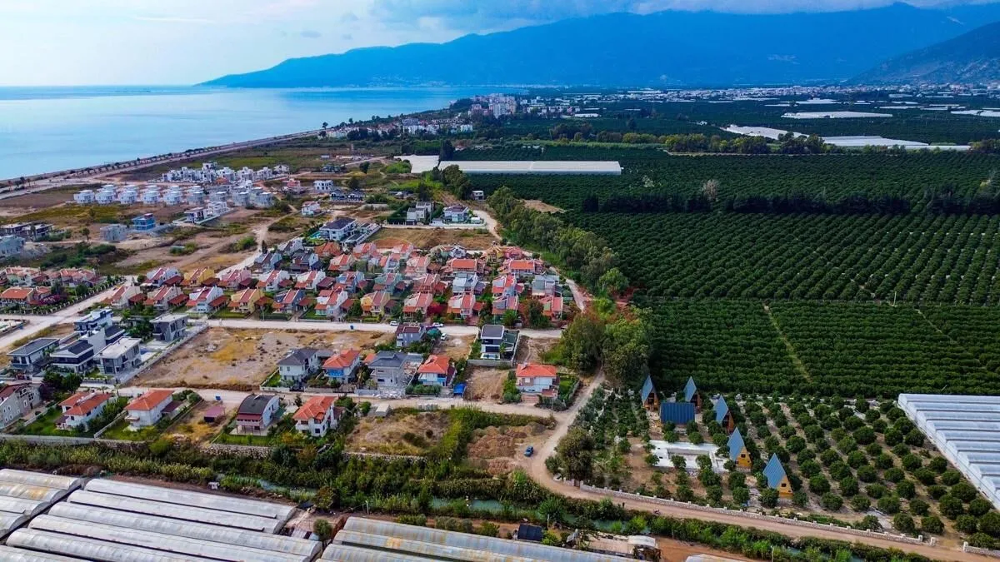
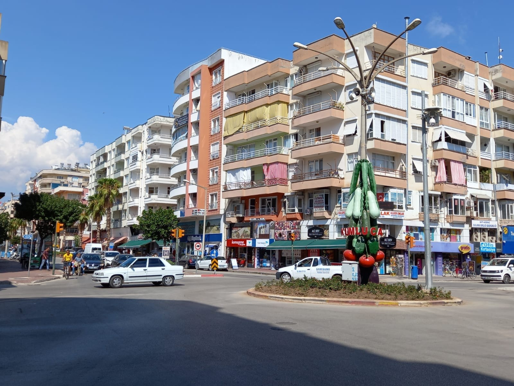
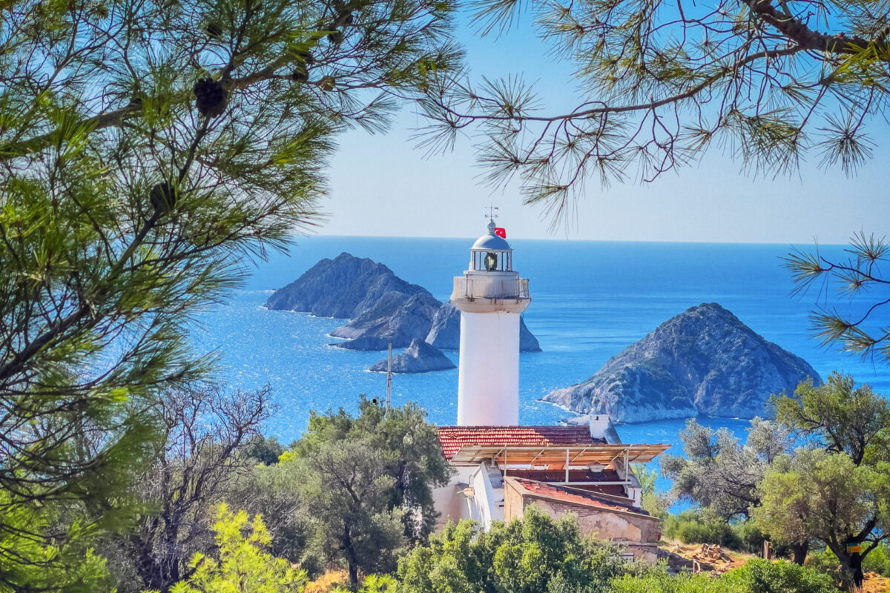
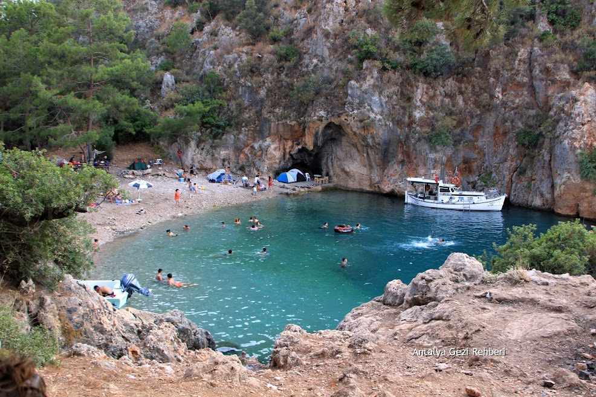
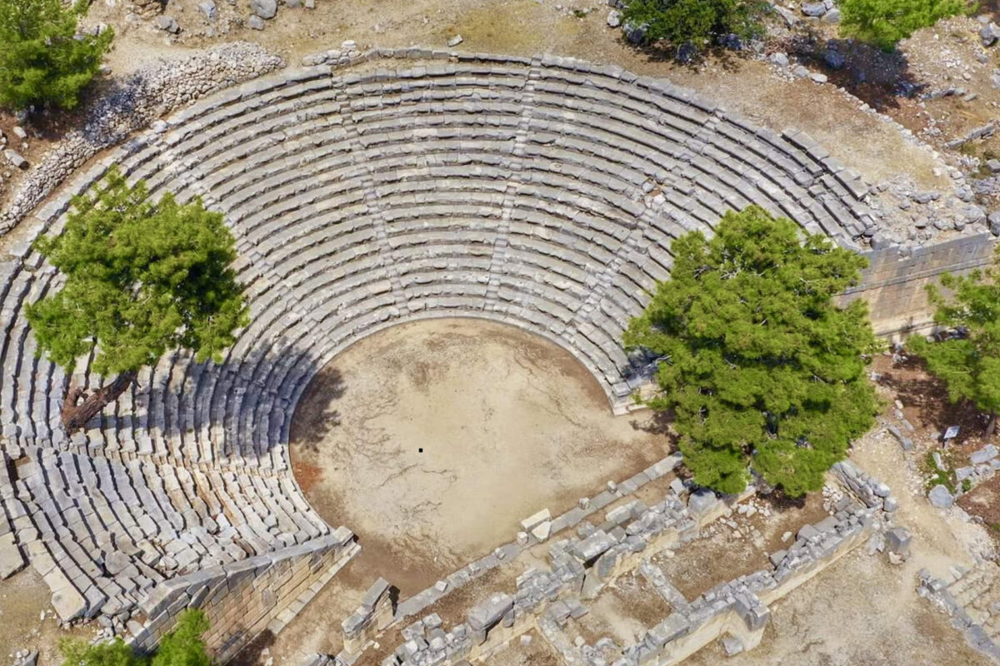

I was born and raised in Kumluca. Kumluca is a beautiful district located on the Mediterranean coast of Turkey, in the province of Antalya. Kumluca is especially famous for its greenhouse agriculture; it is one of Turkey's leading districts in the production of tomatoes and other vegetables. The district is surrounded by the magnificent Taurus Mountains and the crystal-clear waters of the Mediterranean.
Here are some photos from my beautiful hometown:
Kumluca Panoramic View:

Kumluca Coastline:

Kumluca Landmark - Castle Tower (Kale Kule):

Kumluca's Famous Greenhouses:

The Famous Tomato & Pepper Statue:

There are many tourist attractions worth visiting in and around Kumluca. Here are the most notable ones:
Gelidonya Lighthouse is a historic lighthouse located on Cape Gelidonya, near the village of Karaöz in Kumluca. Built in 1936, the lighthouse offers one of the most beautiful views of the Mediterranean. The view of the Five Islands (Gelidonya Islands) from here is breathtaking. Located on the Lycian Way, the lighthouse is an essential stop for hiking enthusiasts. Visiting this place at sunset offers an unforgettable experience.

Pirate Bay is one of Kumluca's most hidden and beautiful beaches. It gets its name from the legend that pirates used this bay as a shelter in ancient times. With its turquoise crystal-clear waters and natural surroundings of pine trees, it is a paradise-like place. You need to take a short nature hike to reach the bay, which makes it even more special and tranquil. It is an ideal spot for swimming, snorkeling, and having a picnic in nature.

Arykanda Ancient City is a magnificent Lycian ancient city built on a mountainside, near the village of Arif in Kumluca. With a history dating back to the 5th century BC, it is one of the most important archaeological sites in the region. The ancient city features a well-preserved theater, bath complex, stadium, agora, and necropolis area. The terraced structures built on the mountainside bear traces from the Roman and Byzantine periods. Arykanda is considered one of Turkey's best-preserved ancient cities and is a must-visit for history enthusiasts.

| Tourist Attraction | Feature | Activities |
|---|---|---|
| Gelidonya Lighthouse | Historic lighthouse, unique scenery | Hiking, photography, sunset watching |
| Pirate Bay | Hidden beach, turquoise sea | Swimming, snorkeling, picnic |
| Arykanda Ancient City | 5th century BC Lycian city | Historical tour, archaeology, cultural trip |